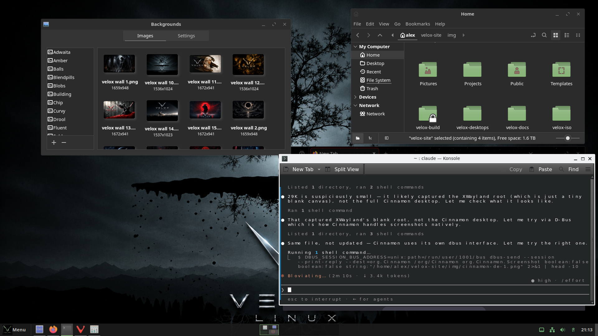
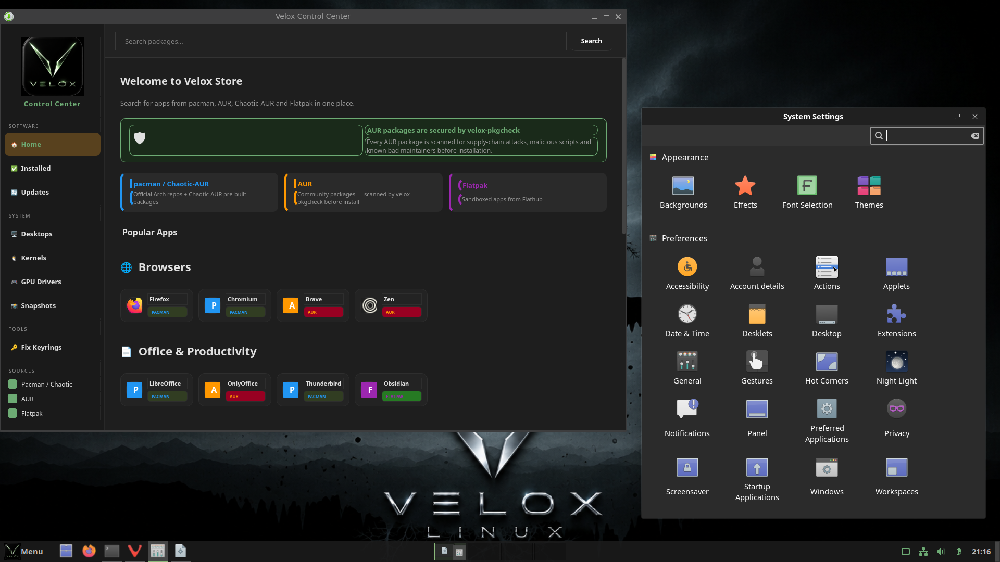

A familiar, traditional desktop layout on a modern Wayland stack. Fluent-Velox-Dark theming with Velox green glass hover effects across every panel, menu, and app.


Cinnamon's default blues are replaced throughout with Velox green — panel, menus, icons, and the app launcher all match.
Panel buttons, the app launcher, system tray icons, clock, and taskbar window buttons all use #8ab87a Velox green. Text is set to a medium grey (#BFBFBF) for readability without being harsh white.
Every interactive element has a consistent glass hover: semi-transparent white fill with a green left-edge accent stripe. Applied across the app menu, category list, favourites, popup menus, panel buttons, taskbar, and workspace switcher.
Cinnamon 6 renamed its menu CSS classes to appmenu-*. All hover states target both the new appmenu-* and legacy menu-* names so the glass effect lands correctly on every element including favourites, categories, and app list rows.
A custom fork of Fluent-grey-Dark with Velox green glass hover in Nemo and all GTK apps. Uses linear-gradient for the glass effect and pre-allocated transparent borders to prevent layout shift on hover.
A custom icon theme inheriting from Newaita with all folder icons recoloured to #8ab87a muted green. The desktop folder icon SVG blue tones are also patched to Velox green at install time.
The workspace switcher overlay popup is fully themed — dark background, grey text, and the active workspace dot uses Velox green instead of the default blue. The label inside the OSD required direct StLabel targeting as font styles don't cascade into St children.
Technical reference for the colors and components used across the Cinnamon desktop.
Consistent across all interactive elements: